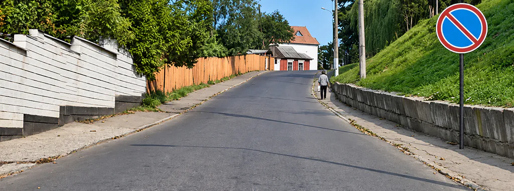
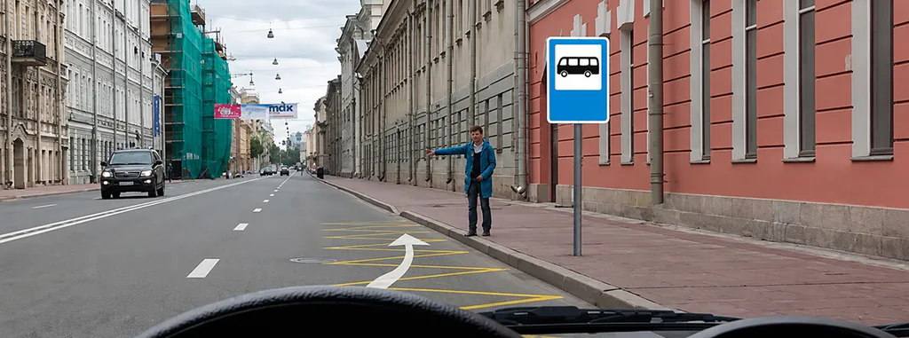
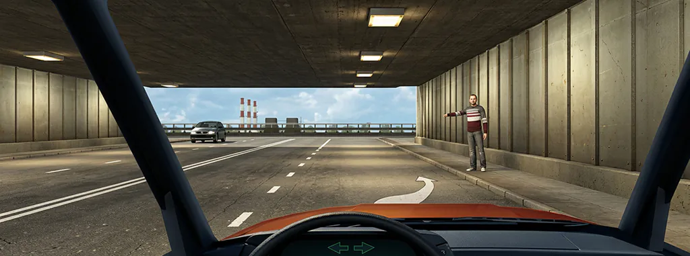

Остановка дольше пяти минут: посадка, высадка и три задачи ПДД

Прекращение движения больше чем на пять минут не всегда является стоянкой: если большее время необходимо для посадки, высадки, загрузки или разгрузки, по определению ПДД это остановка. Но цель «высадить пассажира» не отменяет запреты остановки в конкретном месте.
В билетах удобно разделять два решения: сначала определить действие, затем проверить, разрешено ли оно здесь. Покажем это на трёх вопросах A/B. Подборка объясняет различие условий; она не является статистикой самых частых ошибок на экзамене.
Пять минут: граница с оговоркой о цели
Пункт 1.2 определяет остановку как преднамеренное прекращение движения на время до пяти минут, а также на большее, если это необходимо для перечисленных действий с пассажирами или грузом. Стоянка — прекращение движения более чем на пять минут по причинам, с ними не связанным.
| Учебная ситуация | Что определяет действие | Что проверить отдельно |
|---|---|---|
| Непродолжительное преднамеренное прекращение движения | Продолжительность до пяти минут | Допустимость остановки в месте |
| Высадка или разгрузка действительно требует большего времени | Связь необходимого времени с указанным действием | Знаки, разметку и общие запреты |
| Более пяти минут по другой причине | Признаки стоянки | Запреты стоянки и остановки |
Это таблица для преднамеренного прекращения движения. Ожидание разрешающего сигнала, необходимость уступить дорогу и вынужденная остановка требуют своего анализа. Не подменяйте определение правилом «машина стоит, значит, водитель припарковался».
Задача 1. Посадка и разгрузка под знаком 3.28

A/B, билет 19, вопрос 3. Разрешено ли осуществлять посадку (высадку) пассажиров либо загрузку (разгрузку) транспортного средства в зоне действия этого знака?
- Разрешено
- Разрешено, если это займет не более 5 минут
- Запрещено
Проверить ответ
Верно: Разрешено.
На рисунке «Стоянка запрещена». Спрашивают именно о посадке, высадке, загрузке и разгрузке. Поэтому правильный вариант не добавляет условие «не более пяти минут»: определение остановки допускает необходимое для этих действий большее время.
Важна формулировка «если это необходимо». Вопрос не разрешает использовать название разгрузки как оправдание для любого ожидания. Сначала установите действительную цель и условия прекращения движения. Затем помните границы решения: знак 3.28 не запрещает остановку сам по себе, однако общие требования раздела 12 продолжают действовать.
Знак 3.27 «Остановка запрещена» имеет другой смысл: он запрещает и остановку, и стоянку. Нельзя перенести ответ из этой картинки на соседнюю только потому, что оба знака синие с красной каймой.
Задача 2. Посадка на остановке маршрутного транспорта

A/B, билет 3, вопрос 5. Можно ли Вам остановиться в этом месте для посадки или высадки пассажиров?
- Можно
- Можно, если при этом не будут созданы помехи движению маршрутных транспортных средств
- Нельзя
Проверить ответ
Верно: Можно, если при этом не будут созданы помехи движению маршрутных транспортных средств.
Здесь место обозначено знаком остановки и жёлтой зигзагообразной разметкой. В пункте 12.4 для посадки и высадки предусмотрено исключение из запрета у мест остановки маршрутных транспортных средств и стоянки легковых такси: нельзя создавать помехи соответствующему транспорту.
Поэтому неверны оба крайних сокращения — «обычной машине всегда нельзя» и «пассажира можно высадить без условий». Правильный ответ сохраняет условие об отсутствии помех. Подъезжающий автобус не должен менять движение из-за вашей посадки.
В полном тексте нормы учитываются также транспортные средства, используемые в качестве легкового такси. В приведённом варианте ответа базы названы маршрутные транспортные средства; читайте норму целиком, а вопрос — в его конкретной формулировке. Эта оговорка относится к обозначенному исключению и не снимает другие запреты в выбранном месте.
Задача 3. Та же цель в тоннеле

A/B, билет 37, вопрос 12. Можно ли Вам остановиться в тоннеле для посадки пассажира?
- Можно
- Можно, если Вы управляете легковым такси
- Нельзя
Проверить ответ
Верно: Нельзя.
Теперь слово «посадка» осталось, но место другое. Пункт 12.4 запрещает остановку в тоннелях. Для показанной преднамеренной остановки ради пассажира исключения нет. Поэтому верный ответ — «Нельзя»; вариант про легковое такси тоже не подходит.
Так видно, почему нельзя решать только по цели. В первой задаче запрет относился к стоянке, во второй у конкретной нормы имелось условное исключение, в третьей оно к посадке пассажира не предусмотрено. Длительность в одну минуту не делает третью остановку разрешённой.
Три проверки перед выбором ответа
- Что происходит? Преднамеренная остановка, стоянка или иная ситуация? Опирайтесь на цель и время, заданные вопросом.
- Что запрещает место? Остановку, только стоянку или определённый способ расположения машины? Сопоставьте знак с разделом 12.
- Есть ли исключение именно здесь? Если есть, выполнены ли его условия, включая отсутствие помех?
Не пропускайте второй шаг после того, как правильно определили термин. Назвать действие остановкой — ещё не доказать его разрешённость. И не добавляйте в вариант ответа бытовой запас вроде «на пару секунд можно»: такого универсального исключения в ПДД нет.
Как закрепить различие
Для каждого разобранного вопроса составьте запись из двух строк: «тип прекращения движения» и «норма места». Например, для 19–3 — остановка для посадки или разгрузки и знак 3.28; для 37–12 — преднамеренная остановка и тоннель. Не записывайте только номер кнопки: одинаковая цель в разных местах уже дала разные ответы.
Затем выберите в своей базе ещё одну задачу на остановку и до просмотра пояснения объясните оба шага. Для остальных расстояний и способов расположения используйте общий разбор остановки и стоянки. Здесь задача уже: не превращать пять минут и посадку пассажира в универсальное разрешение.
Источники и проверка
Выберите билет своей категории и перед ответом проверьте тип остановки, знак и условия конкретного места.
Частые вопросы
Разгрузка дольше пяти минут автоматически становится стоянкой?
Нет. Если большее время необходимо для загрузки или разгрузки, определение остановки в пункте 1.2 допускает такую продолжительность. Место всё равно должно допускать соответствующее действие.
Можно ли высадить пассажира под знаком «Остановка запрещена»?
Цель высадки сама по себе не отменяет знак 3.27. Не переносите на него ответ про знак 3.28 «Стоянка запрещена».
Можно ли посадить пассажира на автобусной остановке?
В предусмотренном пунктом 12.4 исключении посадка и высадка допускаются без создания помех маршрутным транспортным средствам или используемым как легковое такси ТС. Остальные запреты также нужно учитывать.
В тоннеле можно остановиться на минуту ради пассажира?
Нет. В приведённой ситуации преднамеренная остановка запрещена пунктом 12.4, независимо от короткой продолжительности и цели посадки.